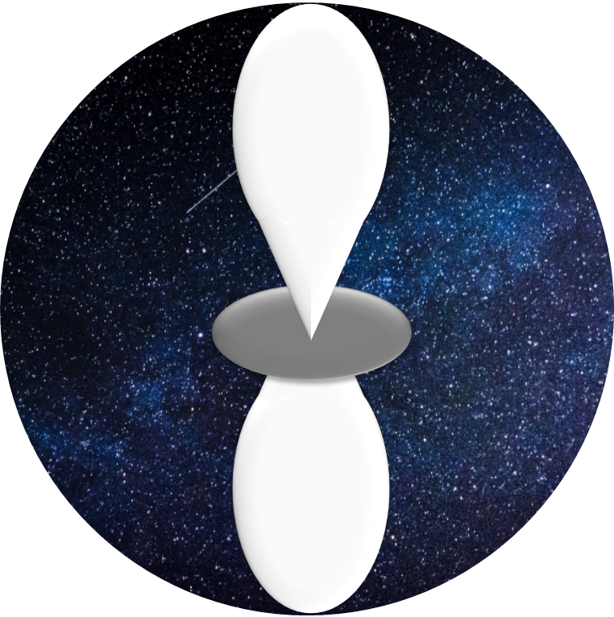
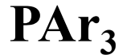
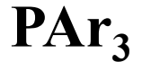
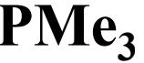
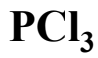
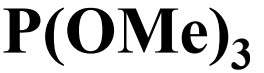
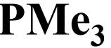
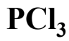
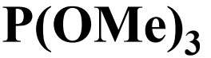

Jugador
/
100
Nivel 1: Ordena los ligandos segun su nomnbre


Carbenos metálicos
Fosfinas metálicos
Carbonilos metálicos
Compuestos tipo sandwich
Nivel 2 : Decifra las frases
 Son complejos de coordinación de metales de transición con ligandos de monóxido de
carbono en estado de baja oxidación. En esto, los ligandos de CO actúan como ligandos
neutros, son útiles en síntesis orgánica y como catalizadores o precursores de
catalizadores en catalizadores homogéneos.En general, estos compuestos obedecen a la
"regla de los 18 electrones". El ligando monóxido de carbono puede estar unido
terminalmente a un solo átomo de metal o en puente con dos o más átomos de metal.
Son complejos de coordinación de metales de transición con ligandos de monóxido de
carbono en estado de baja oxidación. En esto, los ligandos de CO actúan como ligandos
neutros, son útiles en síntesis orgánica y como catalizadores o precursores de
catalizadores en catalizadores homogéneos.En general, estos compuestos obedecen a la
"regla de los 18 electrones". El ligando monóxido de carbono puede estar unido
terminalmente a un solo átomo de metal o en puente con dos o más átomos de metal.
Nivel 3 : Verdadero o Falso
Selecciona la opción correcta (usa el boton del centro al finalizar)
Es una reacción química que forma un enlace a un metal. Esta reacción generalmente se refiere al reemplazo de un átomo de halógeno en una molécula orgánica por un átomo de metal, lo que da como resultado un compuesto organometálico.
Los complejos de_________(buen aceptor s y pobre retrodonador p) exhiben las
siguientes características: (1) el átomo de carbono del carbeno es electrofílicos; (2) el
metal se encuentra en un relativo bajo estado de oxidación; y (3) el metal se encuentra
típicamente hacia el lado derecho del bloque de transición (grupos 6 a 8).
Los complejos de __________(buen aceptor s y buen retrodonador p) presentan
las siguientes características: (1) el átomo de carbono del carbeno es nucleofílico; (2) el
metal se encuentra ubicado hacia el lado izquierdo del bloque de transición (Ta, Zr, Ti,
etc.) y en un relativo alto estado de oxidación; (3) se caracterizan por tener un enlace C=M
fuerte y (4) tienen ligandos dadores tales como grupos alquilo o ciclopentadienilo.
Es la que se encarga del estudio de los compuestos organometálicos, que son
aquellos compuestos químicos que poseen un enlace entre un átomo de carbono y un átomo
metálico, de su síntesis y de su reactividad.

 

 




